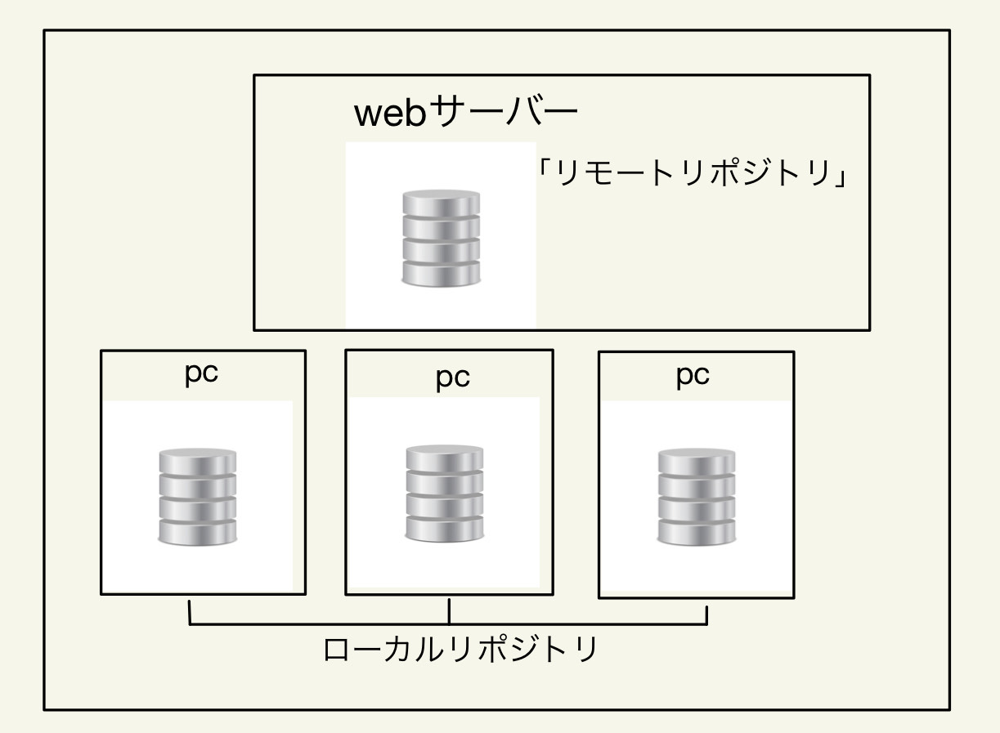
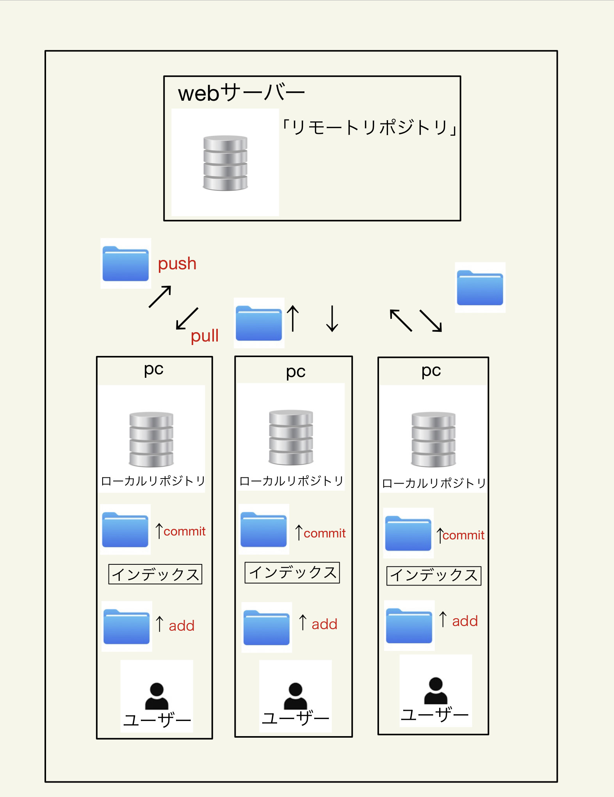

GITを理解するうえで必要な知識の一つである「リポジトリ」と呼ばれるものがある。
リポジトリとはファイルや履歴を記録してくれる保管庫のようなものです。
リポジトリには2種類あります。
- リモートリポジトリ
- ローカルリポジトリ
この2つが存在します。
1つ目のリモートリポジトリはwebサーバー上に存在しています。そして共有で使用することが出来ます。
2つ目のローカルリポジトリはローカルのPC上に存在しています。

4つのアクション
- add
- commit
- pull
- push
add
addとは履歴を残す前の仮登録のようなものです。
commet
commitは、addを行ったと後に、自分のローカルリポジトリに作業内容の履歴を保存する作業のことで、
ファイルを編集した内容・日時・作業者を記録したファイルが生成されて保存されます。
pull
pullは、他の人の作業した履歴を自分のローカルリポジトリのファイルに反映させる作業です。
push
pushは、自分のローカルリポジトリにあるファイルをリモートリポジトリにアップして保存する作業です。
「add・commit・pull・push」の流れ
【1】自分の手元でファイルを編集する。
【2】編集したファイルをaddでインデックスに登録。
【3】インデックスに登録した内容をcommitして、履歴として、ローカルリポジトリに保存する。
【4】ローカルリポジトリをリモートリポジトリに登録する時に、他のユーザーがリモートリポジトリを更新していた場合、
一旦pullでリモートリポジトリの内容を、ローカルリポジトリに落としてくる。
【5】リモートリポジトリの内容をローカルリポジトリに取り込んだ後で、ローカルリポジトリの内容を、リモートリポジトリにpushして保存する。
※ここでのインデックスとは、
リポジトリにコミットする準備をするための場所のことです。

参考サイト
2.htmlに関して
htmlとは
webページを作成させるための言語です。
「HT」とはハイパーテキスト、「M」とはマークアップ、「L」とはランゲージの事です。
ここでの「マークアップ」とは文章の役割を示すという意味の言葉です。例えば、見出しや段落・表・リンクなど
htmlでは文字は普通のテキストだけでなく、「見出し」にしたり、「太文字」や「文字の色」を変更して強調したり、
「下線」を入れて装飾したりすることができます。
これをできるようにするには
「タグ」を理解する必要があります。
主な「タグ」の種類
- h:見出し（h1,h2,h3・・・）
- p:段落（通常のテキスト）
- a:リンクを挿入
- li:箇条書き
- strong:太文字で強調